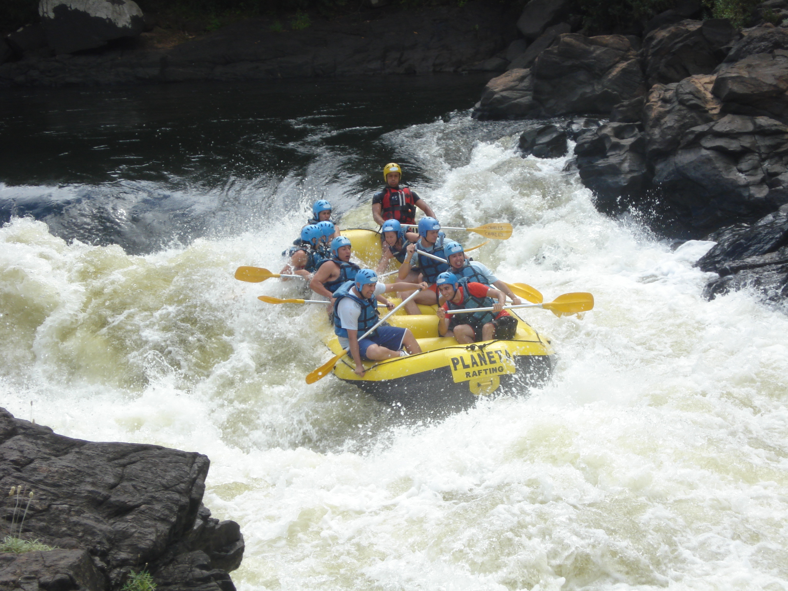
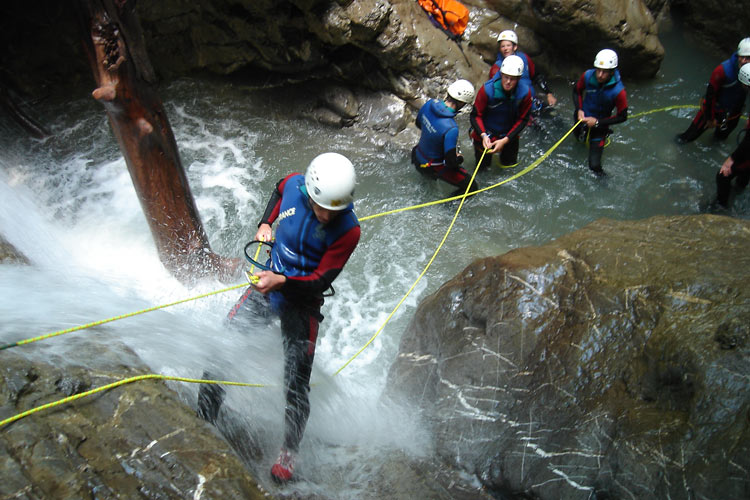
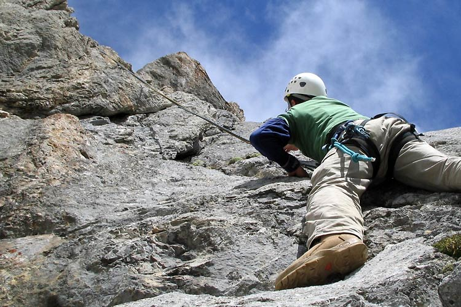

Adrenalin pur beim Wildwasserfahren. Die perfekte Kombination aus Naturerlebnis, sportlicher Aktivität und Teamgeist
Weitere Info zum Rafting
Weitere Infos
Technisch betrachtet enthält Canyoning die Elemente rutschen, springen, schwimmen, klettern, abseilen und dem Flussverlauf folgen.
Mit 19 Klettergärten gehört das Ötztal zu den Tälern mit dem reichhaltigsten Angebot in ganz Tirol. Ob der Klettergarten in Oetz, Tumpen, Niederthai, Nösslach, Oberried, Astlehn oder Sölden: Im Ötztal in Tirol kommt man auf den Klettergeschmack! Wer bislang mit dem Klettern in Tirol noch keine Bekanntschaft gemacht hat, der kann hier seine ersten Gehversuche unternehmen.
Weitere Info zum Klettern
Adresse:
Outdoor Professionals – Bahnhofstraße 16 - 6430 Ötztal-Bahnhof